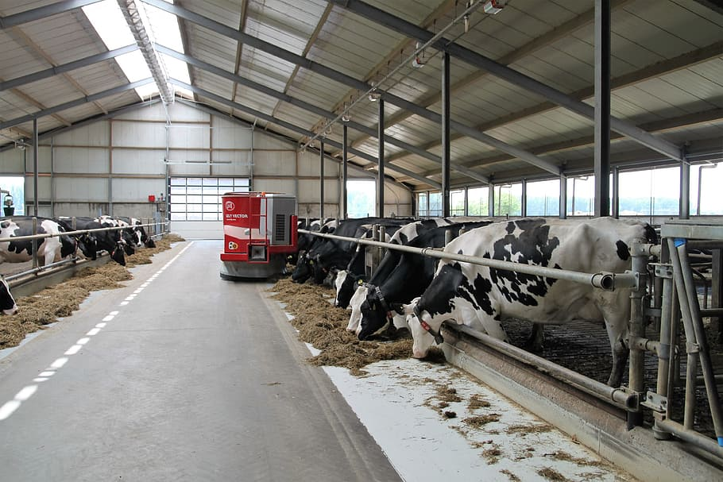

Our Story
Established in the heart of our community in 2024, Awrul Dairy has been dedicated to delivering pure excellence in the form of high-quality milk and a delightful array of milk-based products. Our passion lies in providing not just sustenance, but a wholesome experience, crafting each product with care and dedication. At Awrul Dairy, we believe that the purest moments start with the purest ingredients, and our commitment to quality is the cornerstone upon which we build every drop of our nourishing milk and every delectable creation.We believe in delivering not just dairy, but moments of delight and nourishment to our valued customers. Come, savor the essence of freshness, and let Awrul Dairy be the source of your daily dose of goodness
Our Products
Awrul Dairy offers a delightful array of dairy products, each meticulously crafted to perfection. From our fresh buffalo milk, naturally high in nutrients, to our aged cheeses that tantalize the taste buds, our products are a testament to our commitment to quality and flavor. Indulge in the creamy goodness of our yogurts, made with live cultures for a wholesome experience. Each product is a blend of tradition and innovation, ensuring you receive the best in taste and nutrition.
Our Farm
Our dairy farm is located in the picturesque countryside, providing a natural and healthy environment for our buffaloes. We believe that happy and healthy cows produce the best milk, and that’s why we ensure they are well-cared for and receive the best nutrition.
Quality Assurance
Quality is our top priority. We follow strict quality control measures at every stage of production to guarantee the freshness and purity of our products. Our dedicated team of professionals works tirelessly to maintain the highest hygiene standards and deliver products that our customers can trust.
Visit Us
Awrul Dairy invites you to join our journey from farm to table. Experience the pure essence of buffalo dairy by visiting our farm. See our buffalo roam freely, enjoying a life of contentment and care. To schedule a farm tour, please feel free to contact us. Awrul Dairy, where every product is a blend of passion, dedication, and the purest buffalo goodness.
